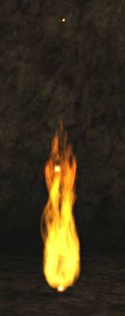

Raven/RParticles
RParticles v. 1.2
RParticles is advanced particle engine for UT'99. It's written only in Unreal Script and therefore it works on Linux, Mac and Windows.
- Up to 16 different templates in one Particle Emitter
- Can fade in/out
- 5 different states (TriggerControl/TriggerTurnsOff/TriggerTurnsOn/TriggerToggle/TriggeredBlast) in ExtendedEmitter
- 2 different selection methods
- 2 different burst methods
- Collision detection
- Performance mode
- Available version for Unreal 1 (tested on 226 and 225f)
- Much more

Class tree:
- Actor
- ParticleSystem - holds everything together
- BasicParticle - particle class
- EmitterCombiner - Emitter Combiner is used for merging many emitters into one effect
- Force - affects BasicParticle velocity (not ParticleEmitter)
- ParticlePath - changes BasicParticle Destination
- ParticleAlter - affects ParticleEmitter configurations (particles velocity)
- ParticleAnimationStorage - stores animation info for particles (for coders)
- UT2k4FireAnimations - animations for UT2k4Fire2
- ParticleEmitter
- ExtendedEmitter - extended version of ParticleEmitter. Contain working states
- WeaponEmitter - emitter for weapon effects. Can be destroyed.
- FireEmitter - holds fire effects together
- UT2k4Fire - fire preset form UT 2004
- UT2k4Fire2 - fire preset from UT 2004 (with ParticleAnimationStorage)
- ParticleTest - sample particles
- Sample1
- Sample2
- Sample3
- ParticleSystem - holds everything together
CTF-TFC-Variatto with RParticles 
Simple Torch created using RParticles ![[RParticles]](images/rparticles.jpeg) UT2k4 and UT'99 emitter ![[RParticlesWindow]](images/rparticleswindow.gif) UED shot |
UT'99 version download link: [26] (tested on 436).
Unreal 1 download link: [27] (tested on 226 and 225f - version 1.2).
Archive content:
- RParticles.u
- 3 samples and 2 working fire templates included
- Help file
Tarquin: Please give images clear and sensible names. '222' does not describe what this image does.
Raven: Sorry for that. I've updated that image with better name - RPartices.jpg.
Tarquin: Thanks This is for UT? Might be an idea to clearly state that at the top of this page. Oh, and don't forget to mark them as custom classes.
Raven Yes, it's for old UT'99. Everything added (I hope). And little update will come soon (new sizing method (infinity/user defined)). Actually it's finished, but i need to test it on-line.
Credits:
- USU team for release UltimaUnreal particle system (it was a base or very first TCO particle system, and now not much of it left in the code right now
 )
) - TCO Team for early betatesting
Version history:
- v. 1.2a (Unreal 1 version)
- new SpawnOffset vestor in Particle_EffectArea[16]
- v. 1.2
- ParticleEmitter is now fully ClientSide.
- States TriggerControl/TriggerTurnsOff/TriggerTurnsOn/TriggerToggle/TriggeredBlast was moved to ExtendedEmitter because of replication which was required in order to make this states work
- WeaponEmitter for any effects which have to be spawned/destroyed during game (like Explosions, etc.)
- v. 1.1 (unreleased)
- new Particle_EffectArea[16] struct to override defult spawn area
- new Particle_Mesh[16] struct which allows to play animations while bUseMesh in Particle_Display[16] is true
- new Particle_Destination[16] struct which gives ability to decide about optional destination
- new ParticlePath actor used to give particles specified path (can be used only if DestinationType != DEST_None)
- new features in Force actor
- few optimizations in replication block
- v. 1.0
- few optimizations
- fixed critical error which in some situations can lead to crash !!
- v. 0.9.0.8
- added new, advanced, velocity functions (Particle_InvertVelocity[16] inside ParticleEmitter)
- v. 0.9.0.7
- optimized ParticleEmitter.uc
- optimized BasicParticle.uc
- v. 0.9.0.6
- added new EmitterCombiner.uc actor
- v. 0.9.0.5
- added new ESizing enum. It describes whenever particle should shrinks/grows endlesly or stop when it reaches specifed size
- v. 0.9.0.4
- added new srtucture: SSize where all size related variables was moved (ParticleDrawScale/ParticleDrawScaleVariance/ParticleGrowth)
- new option, which allow to cyclically changing particle size (shrinking/and growing), has beed added
- new sample (Sample3.uc) which shows cyclically changing particle size
- few smaller or bigger improvements
- v. 0.9.0.3
- added new global setting which can be forced to use instead of template Particle_Main.
- v. 0.9.0.2
- fixed bug in TriggeredBlast state in ParticleEmitter.uc
- added ParticleAnimationStorage.uc to store animation info (override strange bug with static array in an static array of structures).
- added Force.uc actor to change particle velocity (affect only this particles that touches it)
- new icons
- v. 0.9.0.1
- added new presets (UT2k4Fire/UT2k4Fire2)
- few changes in ParticleEmitter.uc